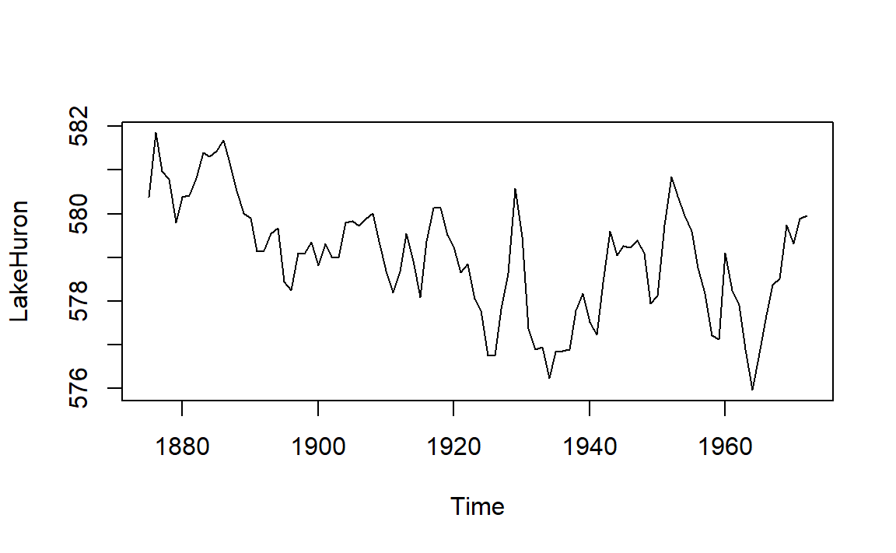

5 R basics
This tutorial is an introduction to R adapted from (Healy, 2019a) with extra material from (Matloff, 2019). If you already have R experience, you might still want to browse this section in case you find something new.
If the prerequisites have been met, the tutorial should take no longer than 50 minutes.
5.1 Prerequisites
Every tutorial assumes that
- You completed the Getting started instructions
- You launched
midfield_institute.Rprojto start the R session
One of the packages is available only on GitHub. To install it, type in the Console,
devtools::install_github("kjhealy/socviz")Note on usage: The double-colon notation package::name accesses a function from a specific package. In this case, for example, we are accessing the install_github() function from the devtools package.
Use File > New File > R Script to create a new R script
- Name the script
01-R-basics.R
- Save it in the
scriptsdirectory - Add a minimal header at the top of the script (if you wish)
- Use
library()to load the packages we will use
# workshop R basics
# name
# date
library("tidyverse")
library("socviz")Run the script by clicking the Source button. If you see an error like this one,
Error in library("pkg_name") : there is no package called 'pkg_name'then you should install the missing package(s) and run the script again.
[To review how to install an R package]
Guidelines
- As you work through the tutorial, type a line or chunk of code then File > Save and Source.
- Confirm that your result matches the tutorial result.
- Your turn exercises give you chance to devise your own examples and check them out. You learn by doing (but you knew that already)!
5.2 Everything in R has a name
In R, every object has a name.
- named entities, like
xory
- data you have loaded, like
my_data - functions you use, like
sin()
Some names are forbidden
- reserved words, like
TRUEorFALSE
- programming words, like
Inf,for,else, andfunction
- special entities, like
NAandNaN
Some names should not be used because they name commonly used functions
q()quitc()combine or concatenatemean()range()var()variance
Names in R are case-sensitive
my_dataandMy_Dataare different objects- I follow the style guide used in the tidyverse by naming things in lower case, with words separated by underscores, and no spaces
If you want to know if a name has already been used in a package you have loaded, go to the RStudio console, type a question mark followed by the name, e.g.,
? c()? mean()
If the name is in use, a help page appears in the RStudio Help pane.
5.3 Everything in R is an object
Origins of R objects
- Some objects are built in to R
- Some objects are loaded with packages
- Some objects are created by you
Type this line of code in your script, Save, Source. c() is the function to combine or concatenate its elements to create a vector.
c(1, 2, 3, 1, 3, 25)In these notes, everything that comes back to us in the Console as the result of running a script is shown prefaced by #>. For example, after running your script, the Console should show,
#> [1] 1 2 3 1 3 25But what is that [1] here? It’s just a row label. We’ll go into that later, not needed yet.
We can assign the vector to a name.
x <- c(1, 2, 3, 1, 3, 25)
y <- c(5, 31, 71, 1, 3, 21, 6)To see the result in the Console, type the object name in the script, Save, and Source. (Remember, type the line of code but not the line prefaced by #>—that’s the output line so you can check your results.)
x
#> [1] 1 2 3 1 3 25
y
#> [1] 5 31 71 1 3 21 6You create objects my assigning them names
<-is the assignment operator (keyboard shortcut: ALT –)- objects exist in your R project workspace, listed in the RStudio Environment pane

Datasets are also named objects, and a large number of datasets are included in the base R installation. For example,LakeHuron contains annual measurements of the lake level, in feet, from 1875–1972.
LakeHuron
#> Time Series:
#> Start = 1875
#> End = 1972
#> Frequency = 1
#> [1] 580.38 581.86 580.97 580.80 579.79 580.39 580.42 580.82 581.40 581.32
#> [11] 581.44 581.68 581.17 580.53 580.01 579.91 579.14 579.16 579.55 579.67
#> [21] 578.44 578.24 579.10 579.09 579.35 578.82 579.32 579.01 579.00 579.80
#> [31] 579.83 579.72 579.89 580.01 579.37 578.69 578.19 578.67 579.55 578.92
#> [41] 578.09 579.37 580.13 580.14 579.51 579.24 578.66 578.86 578.05 577.79
#> [51] 576.75 576.75 577.82 578.64 580.58 579.48 577.38 576.90 576.94 576.24
#> [61] 576.84 576.85 576.90 577.79 578.18 577.51 577.23 578.42 579.61 579.05
#> [71] 579.26 579.22 579.38 579.10 577.95 578.12 579.75 580.85 580.41 579.96
#> [81] 579.61 578.76 578.18 577.21 577.13 579.10 578.25 577.91 576.89 575.96
#> [91] 576.80 577.68 578.38 578.52 579.74 579.31 579.89 579.96Now you can see how the row labels work. There are 10 numbers per row, here, so the second row starts with the 11th, indicated by [11]. The last row starts with the 91st value [91] and ends with the 98th value.
- In the Console, type
? LakeHuronto see the help page for the data set
Individual elements of a vector are obtained using [] notation.
For example, the first five lake level readings are extracted with
LakeHuron[1:5]
#> [1] 580.38 581.86 580.97 580.80 579.79The 4th element alone,
LakeHuron[4]
#> [1] 580.85.4 Do things in R using functions
Functions do something useful
- functions are objects the perform actions for you
- functions produce output based on the input it receives
- functions are recognized by the parentheses at the end of their names
The parentheses are where we include the inputs (arguments) to the function
c()concatenates the comma-separated numbers in the parentheses to create a vectormean()computes the mean of a vector of numberssd()computes the standard deviation of a vector of numberssummary()returns a summary of the object
If we try mean() with no inputs, we get an error statement
mean()
#> Error in mean.default() : argument "x" is missing, with no defaultIf we use the Lake Huron dataset as the argument, the function is computed and displayed. Add these lines to your script, Save, and Source.
mean(LakeHuron)
#> [1] 579.0041
sd(LakeHuron)
#> [1] 1.318299
summary(LakeHuron)
#> Min. 1st Qu. Median Mean 3rd Qu. Max.
#> 576.0 578.1 579.1 579.0 579.9 581.9We can extract subsets of data using functions. For example, If we wanted only the first five even-numbered elements, we use c() to create a vector of indices to the desired elements,
LakeHuron[c(2, 4, 6, 8, 10)]
#> [1] 581.86 580.80 580.39 580.82 581.32If we wanted every 5th entry over the full data set, we use length() to determine how many entries there are, and the sequence function seq() to create the vector of indices,
n <- length(LakeHuron)
LakeHuron[seq(from = 5, to = n, by = 5)]
#> [1] 579.79 581.32 580.01 579.67 579.35 579.80 579.37 578.92 579.51 577.79
#> [11] 580.58 576.24 578.18 579.05 577.95 579.96 577.13 575.96 579.74Because we will be using the ggplot2 package for graphics, we will not be using the base R plot() function very often, but it is useful for a quick look at data. Add these lines to your script, Save, and Source.
plot(LakeHuron)
The help pages for functions are quickly accessed via the Console. In the Console type one line at a time and Enter to see the function help page.
? mean()? sd()? summary()
5.5 R functions come in packages
Functions are bundled in packages
- Families of useful functions are bundled into packages that you can install, load, and use
- Packages allow you to build on the work of others
- You can write your own functions and packages too
- A lot of the work in data science consists of choosing the right functions and giving them the right arguments to get our data into the form we need for analysis or visualization
Functions operate on the input you provide and give you back a result. Type the following in your script, Save, and Source.
table(x) # table of counts
#> x
#> 1 2 3 25
#> 2 1 2 1
sd(y) # standard deviation
#> [1] 25.14435
x * 5 # multiply every element by a scalar
#> [1] 5 10 15 5 15 125
y + 1 # add a scalar to every element
#> [1] 6 32 72 2 4 22 7
x + x # add elements
#> [1] 2 4 6 2 6 50Comments are annotations to make the source code easier for humans to understand but are ignored by R. Comments in R are denoted by a hashtag #.
5.6 R objects have class
Everything is an object and every object has a class.
class(x)
#> [1] "numeric"
class(summary)
#> [1] "function"Certain actions will change the class of an object. Suppose we try create a vector from the x object and a text string,
new_vector <- c(x, "Apple")
new_vector
#> [1] "1" "2" "3" "1" "3" "25" "Apple"
class(new_vector)
#> [1] "character"By adding the word “Apple” to the vector, R changed the class from “numeric” to “character”. All the numbers are enclosed in quotes: they are now character strings and cannot be used in calculations.
The most common class of data object we will use is the data frame.
titanic # data in the socviz package
#> fate sex n percent
#> 1 perished male 1364 62.0
#> 2 perished female 126 5.7
#> 3 survived male 367 16.7
#> 4 survived female 344 15.6
class(titanic)
#> [1] "data.frame"You can see there are four variables: fate, sex, n, percent. Two variables (columns) are numeric, two are categorical.
You can pick variable out of a data frame using the $ operator,
titanic$percent
#> [1] 62.0 5.7 16.7 15.6From the tidyverse, we will regularly use a augmented data frame called a tibble. We can convert the titanic data frame to a tibble using as_tibble().
titanic_tb <- as_tibble(titanic)
class(titanic_tb)
#> [1] "tbl_df" "tbl" "data.frame"
titanic_tb
#> # A tibble: 4 x 4
#> fate sex n percent
#> <fct> <fct> <dbl> <dbl>
#> 1 perished male 1364 62
#> 2 perished female 126 5.7
#> 3 survived male 367 16.7
#> 4 survived female 344 15.6The tibble includes additional information about the variables
5.7 R objects have structure
To see inside an object ask for its structure using the str() function.
str(x)
#> num [1:6] 1 2 3 1 3 25
str(titanic)
#> 'data.frame': 4 obs. of 4 variables:
#> $ fate : Factor w/ 2 levels "perished","survived": 1 1 2 2
#> $ sex : Factor w/ 2 levels "female","male": 2 1 2 1
#> $ n : num 1364 126 367 344
#> $ percent: num 62 5.7 16.7 15.6
str(titanic_tb)
#> Classes 'tbl_df', 'tbl' and 'data.frame': 4 obs. of 4 variables:
#> $ fate : Factor w/ 2 levels "perished","survived": 1 1 2 2
#> $ sex : Factor w/ 2 levels "female","male": 2 1 2 1
#> $ n : num 1364 126 367 344
#> $ percent: num 62 5.7 16.7 15.6I also like to use the glimpse() function from the tidyverse.
glimpse(x)
#> num [1:6] 1 2 3 1 3 25
glimpse(titanic)
#> Observations: 4
#> Variables: 4
#> $ fate <fct> perished, perished, survived, survived
#> $ sex <fct> male, female, male, female
#> $ n <dbl> 1364, 126, 367, 344
#> $ percent <dbl> 62.0, 5.7, 16.7, 15.6
glimpse(titanic_tb)
#> Observations: 4
#> Variables: 4
#> $ fate <fct> perished, perished, survived, survived
#> $ sex <fct> male, female, male, female
#> $ n <dbl> 1364, 126, 367, 344
#> $ percent <dbl> 62.0, 5.7, 16.7, 15.65.8 R does what you tell it
Expect to make errors and don’t worry when that happens. You won’t break anything. Healy (2019b) offers this advice for three specific things to watch out for:
- Make sure parentheses are balanced—that every opening
(has a corresponding closing).
- Make sure you complete your expressions. If you see a
+in the Console instead of the usual prompt>, that means that R thinks you haven’t written a complete expression. You can hitEscorCtrl Cto force your way back to the Console and try correcting the code.
- In ggplot specifically, as you will see, we create plots layer by layer, using a
+character at the end of the line—not at the beginning of the next line.
For example, you would write this,
ggplot(data = mpg, aes(x = displ, y = hwy)) +
geom_point()not this,
# error caused by incorrectly placed +
ggplot(data = mpg, aes(x = displ, y = hwy))
+ geom_point()To conclude, let’s make bar graph of the titanic data,
ggplot(data = titanic_tb, mapping = aes(x = sex, y = n, fill = fate)) +
geom_col() +
coord_flip()
Your turn. As shown, color distinguishes those who survived from those who did not and bar length gives totals by sex. Make a small change so that color denotes sex and bar length gives totals of survived and perished.
5.9 Pipe operator
%>% is the pipe operator from the magrittr package, part of the tidyverse suite of packages.
The pipe takes the output of one statement and makes it the input of the next statement. You can think of it as the word “then”. In this example, we’ll use the starwars dataset from the dplyr package,
glimpse(starwars)
#> Observations: 87
#> Variables: 13
#> $ name <chr> "Luke Skywalker", "C-3PO", "R2-D2", "Darth Vader", ...
#> $ height <int> 172, 167, 96, 202, 150, 178, 165, 97, 183, 182, 188...
#> $ mass <dbl> 77.0, 75.0, 32.0, 136.0, 49.0, 120.0, 75.0, 32.0, 8...
#> $ hair_color <chr> "blond", NA, NA, "none", "brown", "brown, grey", "b...
#> $ skin_color <chr> "fair", "gold", "white, blue", "white", "light", "l...
#> $ eye_color <chr> "blue", "yellow", "red", "yellow", "brown", "blue",...
#> $ birth_year <dbl> 19.0, 112.0, 33.0, 41.9, 19.0, 52.0, 47.0, NA, 24.0...
#> $ gender <chr> "male", NA, NA, "male", "female", "male", "female",...
#> $ homeworld <chr> "Tatooine", "Tatooine", "Naboo", "Tatooine", "Alder...
#> $ species <chr> "Human", "Droid", "Droid", "Human", "Human", "Human...
#> $ films <list> [<"Revenge of the Sith", "Return of the Jedi", "Th...
#> $ vehicles <list> [<"Snowspeeder", "Imperial Speeder Bike">, <>, <>,...
#> $ starships <list> [<"X-wing", "Imperial shuttle">, <>, <>, "TIE Adva...The following code chunk
starwars %>%
count(homeworld) could be read as,
- start with the
starwarsobject, then
- count the number of observations
nby homeworld
Because each observation in starwars is a person, count() yields the number of people from a given homeworld. The result is:
#> # A tibble: 49 x 2
#> homeworld n
#> <chr> <int>
#> 1 <NA> 10
#> 2 Alderaan 3
#> 3 Aleen Minor 1
#> 4 Bespin 1
#> 5 Bestine IV 1
#> 6 Cato Neimoidia 1
#> 7 Cerea 1
#> 8 Champala 1
#> 9 Chandrila 1
#> 10 Concord Dawn 1
#> # ... with 39 more rowsThe pipe makes a sequence of operations easy to construct and easy to read,
starwars %>%
count(homeworld) %>%
arrange(desc(n)) %>%
filter(n >= 3) %>%
drop_na()which can be read as,
- start with the
starwarsobject, then - count the number of observations
nby homeworld, then - arrange the rows in descending order of
n, then
- filter to keep all rows where \(n \ge 3\), then
- drop rows with NA
The output is
#> # A tibble: 5 x 2
#> homeworld n
#> <chr> <int>
#> 1 Naboo 11
#> 2 Tatooine 10
#> 3 Alderaan 3
#> 4 Coruscant 3
#> 5 Kamino 35.10 Keyboard shortcuts
In Windows,
Ctrl Lclears the Console
Alt -creates the assignment operator<-
Ctrl Enterruns the selected line(s) of code in an R script
Feel free to take a break before starting the next tutorial.